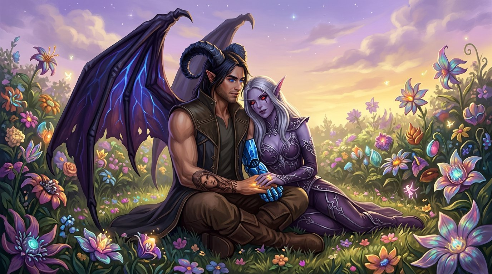

Capítulo Quarenta e Três
O que fica
Meses se passaram.
Não poucos. Não muitos. O suficiente para que as estações mudassem — se é que existiam estações nesse lugar impossível, nesse refúgio entre mundos, nessa realidade que não deveria existir mas que existia. O suficiente para que o jardim de Mira se recuperasse — quase. O círculo de três metros de flores mortas continuou lá. Uma marca. Uma lembrança. Uma prova de que algo tinha acontecido, de que algo tinha passado por ali e deixado um rastro que não podia ser apagado.
Mas ao redor — ao redor do círculo, ao redor da marca, ao redor da lembrança — as flores voltaram. Diferentes. Novas. Cores que não existiam antes, formas que não existiam antes, perfumes que não existiam antes. Como se a terra tivesse decidido que, já que não podia curar o que tinha sido perdido, podia pelo menos criar algo novo no lugar.
E Mira sorriu quando viu. Porque era assim que ela via o mundo — não pelo que tinha sido destruído, mas pelo que tinha sido criado no lugar.
✦
Varokh e Elyra partiram primeiro.
Não foi surpresa. Não foi abrupto. Foi gradual — do jeito que as coisas acontecem quando não são forçadas, quando não são apressadas, quando seguem o ritmo natural de quem sabe que é hora.
Varokh tinha encontrado o que procurava. Não paz — Varokh nunca ia encontrar paz, não do jeito que pessoas normais encontram paz, não do jeito que se senta numa cadeira e se relaxa e se deixa o mundo passar. Varokh tinha encontrado algo melhor. Tinha encontrado propósito. Tinha encontrado Elyra. Tinha encontrado alguém que entendia o silêncio dele, que respeitava os grunhidos, que sabia que "hm" podia significar qualquer coisa entre "eu concordo" e "eu te amo", dependendo do tom e do contexto.
E Elyra tinha encontrado o que procurava também. Não aventura — Elyra sempre ia encontrar aventura, em qualquer lugar, em qualquer mundo, em qualquer realidade. Elyra tinha encontrado algo melhor. Tinha encontrado Varokh. Tinha encontrado alguém que não precisava que ela fosse menos do que era, que não pedia que ela suavizasse as facas, que não tentava transformá-la em algo que ela não era.
E os dois partiram. Juntos. Com um aceno de cabeça — curto, firme, do jeito que eles faziam tudo — e uma promessa.
— A gente volta — disse Elyra.
— Hm — disse Varokh.
E Nathan soube — do jeito que se sabe quando alguém diz algo com aquela certeza, aquele tom, aquela convicção que não admite dúvida — que eles voltariam. Talvez não amanhã. Talvez não na próxima semana. Talvez não no próximo mês. Mas voltariam. Porque era isso que família fazia. Família voltava.
✦
Mira ficou.
Mira sempre ficava. Era o que ela fazia. Era o que ela era. Era a âncora. O porto seguro. A casa que recebia todos que precisavam de casa, sem perguntar por quê, sem cobrar preço, sem exigir nada em troca além de respeito pelo espaço e pelas flores.
E ela cuidava do jardim. E fazia chá. E observava. E sorria. Do jeito que se sorri quando se está feliz por alguém sem precisar de razão.
✦
E Nathan e Sylvanas ficaram.
Ficaram porque era isso que eles queriam. Ficaram porque era isso que eles tinham escolhido. Ficaram porque casa não era um lugar — casa era uma pessoa, e a pessoa estava ali, ao lado, sempre ao lado, mãos dadas, anéis brilhando, corações batendo no mesmo ritmo.
E os dias passaram. E as semanas. E os meses. E eles viveram cada um deles como se fosse o último — não com desespero, não com urgência, mas com a calma de quem sabe que o tempo é precioso e por isso não pode ser desperdiçado com pressa.
✦
De manhã, eles acordavam juntos.
Sempre. Sem exceção. Os olhos abrindo ao mesmo tempo, como se os anéis sincronizassem não apenas os corações mas também os ciclos de sono. E a primeira coisa que Nathan fazia — todas as manhãs, sem exceção — era olhar para ela. Para o rosto dela no travesseiro. Para o cabelo prateado espalhado nos lençóis brancos. Para as marcas abaixo dos olhos que tinham se tornado parte dela — não cicatrizes, não feridas, mas marcas, do tipo que se carrega quando se viveu muito e se sobreviveu a tudo.
E a primeira coisa que Sylvanas fazia — todas as manhãs, sem exceção — era sentir o coração dele. A mão fria dela no peito quente dele, sentindo a batida, contando — porque ela contava, porque contar era quem ela era, e ela não precisava deixar de ser quem ela era para ser outra coisa também.
E então eles se beijavam. Devagar. Do jeito que se beija quando se tem tempo — quando a manhã é longa e o dia é inteiro e a noite ainda está longe e tudo que existe é aquele momento, aquela boca, aquele corpo contra aquele corpo.
E o café era ruim. Porque Nathan fazia café agora — Elyra tinha ido embora, e alguém precisava fazer, e Nathan tinha aprendido que café ruim era melhor do que café nenhum, especialmente quando a pessoa do outro lado da mesa estava ali, presente, real, viva.
E Nathan continuava oferecendo comida para Sylvanas todas as manhãs. E Sylvanas continuava recusando. E os dois sorriam — porque era uma piada agora, uma piada interna, uma piada que só eles entendiam e que por isso valia mais do que qualquer piada no mundo.
✦
De tarde, eles caminhavam.
Não treinavam mais — não com a urgência de antes, não com a necessidade de se preparar para algo que não vinha. O Colecionador não tinha voltado. A porta continuava aberta — em algum lugar, de algum jeito, de alguma forma que Nathan não entendia completamente — mas não era uma ameaça. Era uma possibilidade. Uma opção. Algo que existia mas que não precisava ser usado.
Então eles caminhavam.
Pelo jardim de Mira. Pelos campos ao redor. Pelas colinas que se estendiam até o horizonte, onde o céu lilás encontrava a terra dourada e criava algo que parecia pintura, que parecia sonho, que parecia impossivelmente belo.
E conversavam. Sobre tudo. Sobre nada. Sobre coisas que importavam e coisas que não importavam. Sobre o passado — a Terra, Azeroth, a Gorja, tudo que eles tinham vivido antes de se encontrarem. Sobre o presente — esse momento, esse lugar, essa paz que eles tinham construído juntos, tijolo por tijolo, escolha por escolha, dia por dia. Sobre o futuro — o que viria, o que poderia vir, o que eles queriam que viesse.
E os anéis brilhavam. Sempre. No mesmo ritmo. Dourado. Suave. Constante. Como se tivessem se tornado parte dos corpos deles, como se tivessem nascido ali, como se sempre tivessem existido.
✦
De noite, eles voltavam para o quarto.
E a porta fechava. E o mundo lá fora deixava de existir. E eles existiam — apenas eles, no espaço pequeno e infinito daquele quarto, naquela cama com lençóis brancos e cobertores macios, naquele lugar que tinha se tornado deles.
E faziam amor. Com calma. Com reverência. Com o corpo inteiro dizendo o que a voz não conseguia dizer. Não mais com urgência — a urgência tinha passado, a urgência era de quando eles achavam que o tempo era limitado, de quando eles não sabiam se iam ter amanhã. Agora eles sabiam. Agora eles tinham certeza — não absoluta, nunca absoluta, mas o suficiente. O suficiente para relaxar. O suficiente para aproveitar. O suficiente para existir sem medo.
E depois, ficavam acordados. Conversando. Sussurrando. Rindo. Porque rir era importante — rir era humano, e Nathan era humano, e Sylvanas tinha aprendido a rir com ele, tinha aprendido que rir não era fraqueza, que rir não era perda de controle, que rir era apenas outra forma de existir.
E eles riam. Muito. Sobre coisas bobas. Sobre coisas que só eles entendiam. Sobre piadas internas que ninguém mais ia entender nunca. E era perfeito. Era deles. Era tudo.
✦
Um dia — um dia como qualquer outro, um dia que não tinha nada de especial, um dia que era apenas mais um na sequência infinita de dias que eles tinham pela frente — Nathan e Sylvanas estavam sentados no jardim.
No círculo de flores mortas.
Não por escolha consciente. Não por razão específica. Apenas porque era um lugar — um lugar como qualquer outro, um lugar que existia, um lugar que tinha uma história mas que não precisava ser evitado só porque a história era difícil.
Eles estavam sentados ali. Mãos dadas. Anéis brilhando. Olhando para o céu — aquele céu impossível, lilás e dourado, com estrelas durante o dia, com cores que não existiam em nenhum mundo conhecido.
E Nathan falou.
— Sabe o que eu penso?
Sylvanas olhou para ele. Aquele olhar — aquele que ela reservava para ele, aquele que era suave e firme ao mesmo tempo, aquele que dizia "eu estou ouvindo, eu estou aqui, eu estou presente".
— O quê?
— Eu penso que a gente tem uma história engraçada.
— Engraçada como?
— Engraçada de estranha. De improvável. De impossível. — Ele sorriu. — Eu era um cara normal. Na Terra. No meu mundo. Jogando World of Warcraft. E você era... você. Uma personagem. Uma história. Algo que existia numa tela, numa narrativa, num universo que não era o meu.
— E agora?
— Agora você é real. E eu sou... isso. — Ele gesticulou para si mesmo — os chifres, a prótese, as asas dobradas, os olhos azuis. — E a gente está aqui. Nesse lugar impossível. Com anéis que brilham e que conectam os nossos corações. E eu penso... — Ele parou. Pensou. — Eu penso que se alguém me contasse essa história antes, eu não ia acreditar.
Sylvanas sorriu. Aquele sorriso — aquele que Nathan conhecia melhor do que conhecia o próprio reflexo, aquele que aparecia raramente e que por isso valia mais do que qualquer tesouro em qualquer mundo.
— Eu também não — disse ela.
E então ela olhou para ele. De verdade. Profundamente. Do jeito que se olha quando se quer dizer algo que não pode ser dito com palavras, quando se quer transmitir algo que é grande demais para a linguagem, quando se quer mostrar algo que existe além do visível.
— Mas eu não preciso acreditar — disse ela. — Eu só preciso viver.
E Nathan entendeu. Entendeu completamente. Porque era isso — era exatamente isso. Não era sobre acreditar. Não era sobre entender. Não era sobre fazer sentido. Era sobre viver. Sobre estar ali. Sobre existir. Sobre escolher, todos os dias, de novo e de novo e de novo, que sim, que era isso que ele queria, que era isso que ele escolhia, que era isso que importava.
— Eu te amo — disse ele.
Três palavras. Simples. Diretas. Sem drama. Sem declaração épica. Sem discurso. Apenas a verdade — crua, limpa, incontestável.
E Sylvanas olhou para ele. E sorriu. E apertou a mão dele. E os anéis brilharam — forte, dourado, do jeito que brilhavam quando algo era dito não com palavras, mas com a convicção absoluta de quem sabe exatamente o que sente e não vai mudar de ideia.
— Eu sei — disse ela.
E então ela se inclinou. E beijou ele. Devagar. Do jeito que se beija quando se tem tempo — quando a tarde é longa e o dia é inteiro e a noite ainda está longe e tudo que existe é aquele momento, aquela boca, aquele corpo contra aquele corpo.
E os anéis brilharam.
E o céu brilhou.
E o jardim — o círculo de flores mortas e as flores novas ao redor — brilhou.
E tudo brilhou.
Porque era isso que ficava quando tudo passava.
Não a dor. Não a perda. Não o medo. Não a solidão. Não a Gorja. Não o Colecionador. Não as portas. Não as fendas. Não os anos sozinhos.
Ficava isso.
Dois corpos. Duas mãos. Dois anéis. Dois corações batendo no mesmo ritmo.
E a escolha — sempre a escolha, feita de novo todos os dias, de novo e de novo e de novo — de que sim.
De que era isso.
De que era aqui.
De que era agora.
De que era para sempre.

Fim do Livro IV — O Que Fica Quando Tudo Passa